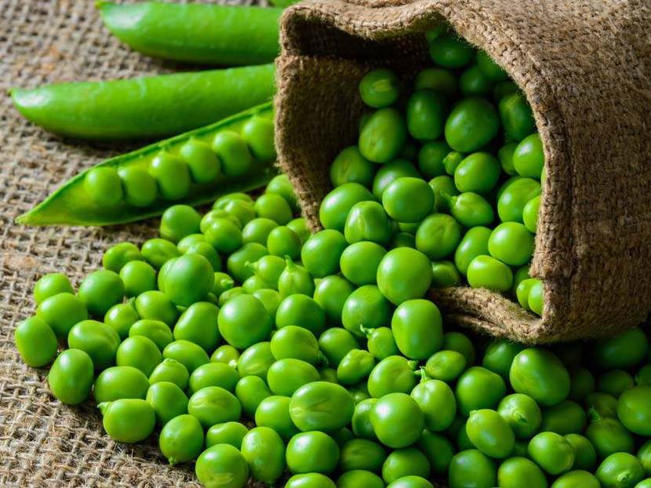

Green Peas - Rs.100/per kg
Support our locals who are working on the agricultural fields throughout day and night to protect our natural foods and herbs. Buy now.
Product Description
Green peas, or “garden peas,” are the small, spherical seeds that come from pods produced by the Pisum sativum plant. They have been part of the human diet for hundreds of years and are consumed all over the world. Strictly speaking, green peas are not vegetables. They are part of the legume family, which consists of plants that produce pods with seeds inside. Lentils, chickpeas, beans and peanuts are also legumes. However, green peas are commonly cooked and sold as a vegetable and this article will refer to them as such. You can find them in frozen, fresh or canned varieties. Since green peas are high in complex carbs called starches, they are considered a starchy vegetable along with potatoes, corn and squash. There are several different varieties of peas available, including yellow peas, black-eyed peas and purple peas. However, green peas are the most frequently consumed.
Testimonials
Green peas are fairly low in calories and contain several vitamins, minerals and antioxidants. They’re also high in fiber and protein. They’re Filling and an Excellent Source of Protein. Green peas are one of the best plant-based sources of protein, which is a major reason why they are so filling, along with their high amount of fiber. Eating protein increases the levels of certain hormones in your body that reduce appetite. Protein works together with fiber to slow digestion and promote feelings of fullness. Eating adequate amounts of protein and fiber may automatically reduce the number of calories you eat throughout the day by keeping your appetite under control. The unique protein content of green peas makes them an excellent food choice for those who do not eat animal products. However, it is important to note that they are not a complete source of protein, since they lack the amino acid methionine.
Source: Click here